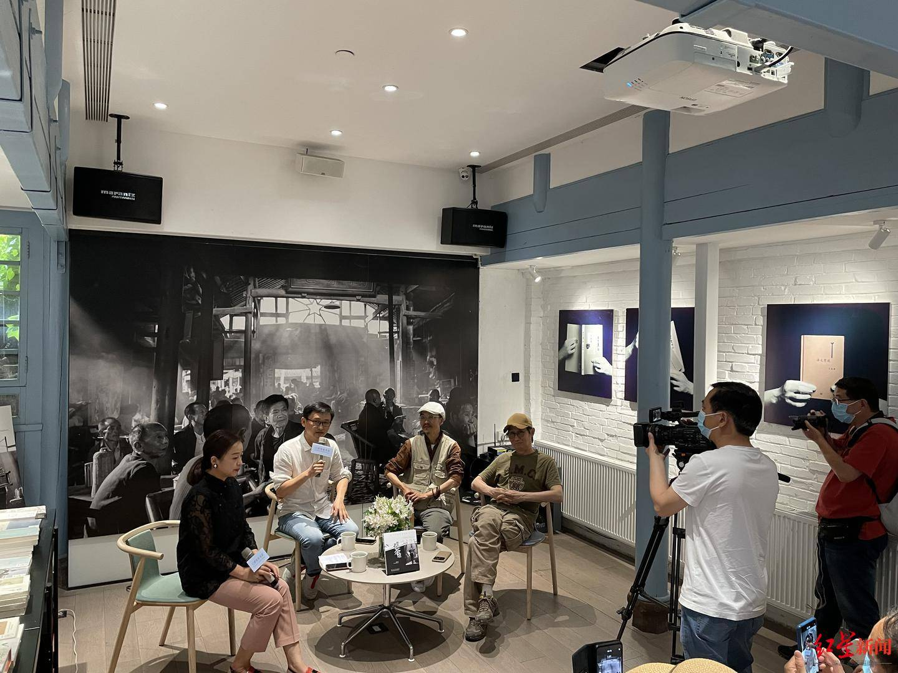

用时间的艺术记录双流彭镇老茶馆的传统与新生，在百个瞬间中感受深藏百年的烟火与生命之美。今天（4月29日）下午，由双流区委宣传部、双流区文化体育和旅游局主办的成都双流区创建天府旅游名县系列活动之一——“彭镇老茶馆影像展暨百年老茶馆的百个瞬间新书发布会”活动在宽窄巷子三联韬奋书店举行，活动旨在积极挖掘传统文化资源，培育打造具有代表性地方特色文化品牌，推进文脉传承。

活动现场，用100幅照片记录彭镇老茶馆100个瞬间的《百年老茶馆》一书正式发布。该书从纪实摄影师钟跃民拍摄的上万张彭镇老茶馆影像作品中，精选出100张入册，具有浓厚的“天府味儿”、“成都味儿”、“双流味儿”。
记者了解到，钟跃民自2008年起，几乎天天“泡”在老茶馆，并因此“捕获”了大量好照片，“随着时间的推移，社会的变迁，看似从未变过的彭镇百年老茶馆，实则也发生了巨大变化，这为我的拍摄提供了丰富的素材。”钟跃民说。
钟跃民告诉记者，之所以执着于彭镇老茶馆，因为它是双流乃至成都的一张文化名片，承载着四川人独有的闲适与淡然。四川省摄影家协会副主席陈锦在谈到《百年老茶馆》时也认为，茶馆是人与人之间、人与社会之间发生关联的平台和纽带，茶馆文化具有鲜明的成都地域特色，“当下的成都，尚有历史、有文化、有精气神的老茶馆，彭镇这个算得上硕果仅存。”
除新书《百年老茶馆》的正式亮相外，45幅全面展示双流彭镇老茶馆的风貌和人情的摄影作品，也于今日（29日）至5月5日期间，在宽窄巷子的时光长廊中，为市民、游客讲述一段光阴岁月与茶客人生的故事。
本次摄影展上的45件作品，侧重于表达老茶馆对过去和现在的完美连接，既能体现老茶馆的“老”与“旧”，也注重展示它的“新”与“活”。